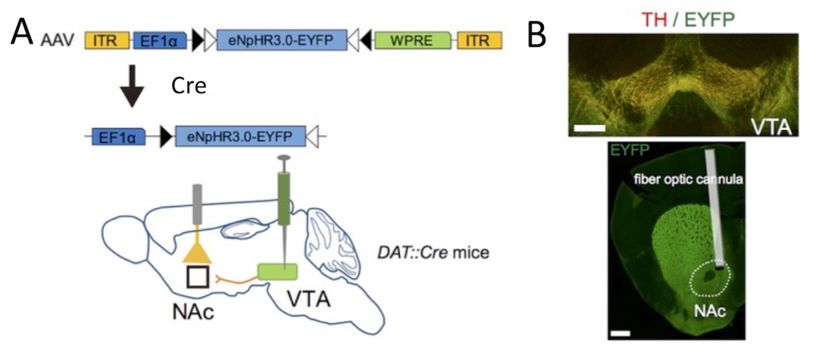

神経回路の活動を操作
 Image by Pixabay
Image by Pixabay
精神・神経疾患を引き起こす神経経路や細胞種を見つけ出す
脳は機能の異なった複数の領域から構成されており、これらが相互作用することによって働いています。うつ病のような精神疾患は多彩な症状を示す症候群で、それぞれの症状に対応する神経回路の病理を明らかにすることが、新しい診断法・治療法の開発には不可欠です。この問題に取り組むため、遺伝子改変技術とウイルスによる遺伝子導入技術の開発を進めています。
例えば、新規遺伝子導入技術によってうつ病様の行動異常や睡眠障害に関与する脳の新たな細胞を見出しています。具体的には、神経細胞の活動を制御するグリア細胞のうち、アストロサイトと呼ばれる細胞の機能を抑制したマウスを作成し、ストレス感受性や不安様行動、レム睡眠異常などのうつ病様表現型を示すことを明らかにしました（Cui et al., J Neurosci, 2014; Aizawa and Zhu; 2019; Aizawa et al., GLIA, 2020)。
また、光遺伝学という新規技術を使うと、脳に埋め込まれた特定の神経回路だけを選択的に操作することができます。実際、この方法をドーパミン神経細胞に応用することで、マウスの抗うつ効果を引き起こす事ができました (Cui et al., J Neurosci, 2020)。

さらに、最近ではCRISPR/Cas9によるゲノム編集技術をウイルス遺伝子導入法と組み合わせて、遺伝子改変の効率化を実現しました。これまでは、トランスジェニックマウス系統やノックアウトマウス系統を作成するには長い時間と膨大なコストがかかっていました。新規開発技術では、野生型マウスに対して開発したウイルスを導入することでこの問題を解決します（Cui et al., J Neurosci, 2020）。この遺伝子導入をはかるウイルス作成には１ヶ月程度しかかからないことから、効率の面で飛躍的な進歩が期待できます（Aida et al., BMC Genomics, 2016）。また、この技術応用によりヒト精神・神経疾患で見つかった遺伝子変異が、脳の活動にどのような影響を及ぼすかを調べることができるようになりました（Ishizu et al., Hum Mol Genet, 2016; Aikawa et al., Hum Mol Genet, 2017）。

関連論文
Cui W, Aida T, Ito H, Kobayashi K, Wada Y, Kato S, Nakano T, Zhu M, Isa K, Kobayashi K, Isa T, Tanaka K, Aizawa H. Dopaminergic signaling in the nucleus accumbens modulates stress-coping strategies during inescapable stress. J Neurosci. 2020 Sep 16;40(38):7241-7254.
Aizawa H, Sun W, Sugiyama K, Itou Y, Aida T, Cui W, Toyoda S, Terai H, Yanagisawa M, Tanaka K. Glial glutamate transporter GLT-1 determines susceptibility to spreading depression in the mouse cerebral cortex. Glia. 2020 Jun 25. in press
Aizawa H, Zhu M. Toward an understanding of the habenula’s various roles in human depression. Psychiatry Clin Neurosci. 2019 Oct;73(10):607-612.
Aikawa T, Watanabe T, Miyazaki T, Mikuni T, Wakamori M, Sakurai M, Aizawa H, Ishizu N, Watanabe M, Kano M, Mizusawa H, Watase K. Alternative splicing in the C-terminal tail of Cav2.1 is essential for preventing a neurological disease in mice. Hum Mol Genet. 2017 Aug 15;26(16):3094-3104.
Aida T, Nakade S, Sakuma T, Izu Y, Oishi A, Mochida K, Ishikubo H, Usami T, Aizawa H, Yamamoto T, Tanaka K. Gene cassette knock-in in mammalian cells and zygotes by enhanced MMEJ. BMC Genomics. 2016 Nov 28;17(1):979.
Ishizu N, Yui D, Hebisawa A, Aizawa H, Cui W, Fujita Y, Hashimoto K, Ajioka I, Mizusawa H, Yokota T, Watase K. Impaired striatal dopamine release in homozygous Vps35 D620N knock-in mice. Hum Mol Genet. 2016 Oct 15;25(20):4507-4517.
Cui W, Mizukami H, Yanagisawa M, Aida T, Nomura M, Isomura Y, Takayanagi R, Ozawa K, Tanaka K, Aizawa H. Glial dysfunction in the mouse habenula causes depressive-like behaviors and sleep disturbance. J Neurosci. 2014 Dec 3;34(49):16273-85.
投稿
New study on a novel microscope for 3D visualization of the brain structure with deep ultraviolet light

New publication on dopamine transmission in stress-coping behavior